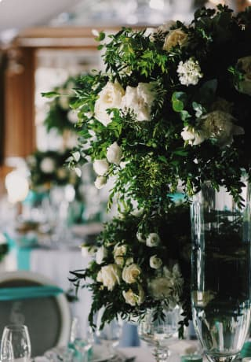
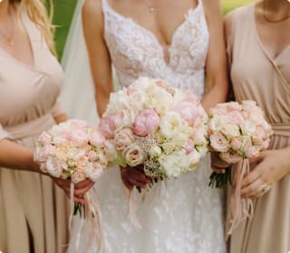

А ви знали, що церемонія одруження проводилася зі Стародавніх
часів? Ще в культурах античної Греції і Риму згадуються весільні
традиції та порядки.
Наприклад, весільним поцілунком римляни здійснювали «обмін душами»
між нареченим і нареченою. Цим же способом вони користувалися при
укладенні угод, як би скріплюючи їх. На щастя, лише перший звичай
зберігся в сучасній цивілізації.
Що ж тепер являє собою весільна церемонія?
Гучні та веселі свята, безліч рідних та близьких, столи зі
смачними стравами та напоями і, звичайно, яскраві весільні кошики
та букети з ніжними квітами.
Саме про останні і піде мова. Квіти є невід'ємним подарунком на
весіллях, будь ви нареченим, свідком або гостем. Вони уособлюють
собою сяючу красу і щиру любов.

Весільний букет нареченої в Харкові — справжній символ цієї події,
без якої неможливо обійтися.
Ми переконані, що наша компанія повинна нести радість і емоції
клієнтам в першу чергу, крім грошової вигоди. Тому пропонуємо
тільки найкраще, дозволяючи запам'ятати найзворушливіші та
найважливіші моменти весілля разом із квітковою свіжістю та
красою.
Покупка свадебного букета невесты в Минске решается заказом на
этом сайте
До прикладу, вас запросили на весілля близькі друзі і насамперед
потрібно вибрати подарунок. Або ж ви родич і хочете особливо і
оригінально привітати молодих. Можливо, вашу кандидатуру зробили
свідком.
У кожній ситуації, пов'язаній з купівлею унікального і цінного
подарунка для молодят, наша компанія знайде незвичайний і стильний
варіант весільного букета в Харкові.
Одна з головних переваг магазину gvozdika.by – величезний
асортимент, який налічує близько 150 найменувань весільних
квіткових композицій. Ми пропонуємо десятки видів рослин: троянди
та лілії, тюльпани та хризантеми, орхідеї та фрезії, альстромерії
та гіпсофіли, гвоздики та зелень, а також багато інших.
Розвиваючи і покращуючи сервіс, флористи додають у продаж нові
квіти і намагаються залишити гарне враження від квіткової
композиції. Всім клієнтам пропонують індивідуальне обслуговування,
допомагаючи зробити свій неповторний вибір. Враховуються будь-які
побажання та зауваження про весільні букети в Харкові.
Наш магазин з розумінням відноситься до фінансових можливостей
кожної людини. Тому готові запропонувати недорогі рішення,
економічність яких не вплине на парадний і урочистий вигляд
букета. Більше того, ми щодня проводимо акції та розпродажі, які
дозволять придбати першокласну композицію за доступною ціною.
Клієнтам, які випробували наші послуги, надається знижка на друге
замовлення.

Купити у нас букет на весілля в Харкові можна двома способами
1
Ви відвідуєте роздрібний відділ за адресою: вулиця Жовтнева 23a,
павільйон 20а
2
Оформляєте замовлення через інтернет або у менеджера по телефонам,
які вказані на сайті менеджером по телефонам, які вказані на сайті
Для вашої зручності ми використовуємо номери різних мобільних
операторів.
Основними перевагами доставки перед самовивозом є: швидкість і
делікатність кур'єрів, вибір точного часу, декоративне оформлення
від фахівців.
Оплата здійснюється через банківські рахунки, електронні гроші або
готівку. Рекомендуємо докладніше ознайомитися з умовами доставки
через одноіменну вкладку на веб-сайті або зв'язок з менеджерами.
gvozdika.by працює більше року як інтернет-магазин, і близько
десяти років як роздрібна мережа.
За цей час ми виробили особливу цінову політику і ставлення до
покупця. Ціни, сформовані за роки діяльності у флористичній сфері,
нижчі за пропозиції конкурентів на 5–10%. Вартість оформлення
весільних букетів в магазині — найкращі в Харкові. Переконатися в
цьому ви можете, скориставшись нашим сервісом або ознайомившись з
відгуками постійних клієнтів.
Крім того, ми раді постійній співпраці і уважно вислухаємо
будь-які пропозиції. Оптові закупівлі в нашій компанії збережуть
гроші, які підприємець зможе направити на розвиток бізнесу.